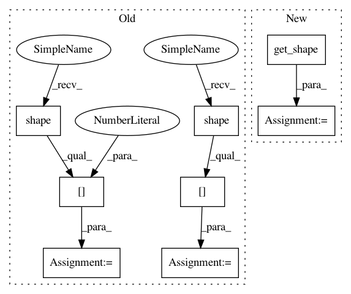

a4d9c3a0656639f00ea0050e6535f7bf547d8719,research/object_detection/meta_architectures/faster_rcnn_meta_arch.py,FasterRCNNMetaArch,_gather_instance_masks,#FasterRCNNMetaArch#Any#Any#,866
Before Change
k = tf.shape(instance_masks)[0]
num_mask_classes = tf.shape(instance_masks)[1]
instance_mask_height = tf.shape(instance_masks)[2]
instance_mask_width = tf.shape(instance_masks)[3]
classes = tf.reshape(classes, [-1])
instance_masks = tf.reshape(instance_masks, [
-1, instance_mask_height, instance_mask_width
])
After Change
Returns:
masks: a 3-D float32 tensor with shape [K, mask_height, mask_width].
_, num_classes, height, width = instance_masks.get_shape().as_list()
k = tf.shape(instance_masks)[0]
instance_masks = tf.reshape(instance_masks, [-1, height, width])
classes = tf.to_int32(tf.reshape(classes, [-1]))
gather_idx = tf.range(k) * num_classes + classes
In pattern: SUPERPATTERN
Frequency: 3
Non-data size: 8
Instances
Project Name: tensorflow/models
Commit Name: a4d9c3a0656639f00ea0050e6535f7bf547d8719
Time: 2018-04-13
Author: lzc@google.com
File Name: research/object_detection/meta_architectures/faster_rcnn_meta_arch.py
Class Name: FasterRCNNMetaArch
Method Name: _gather_instance_masks
Project Name: tensorflow/models
Commit Name: a4d9c3a0656639f00ea0050e6535f7bf547d8719
Time: 2018-04-13
Author: lzc@google.com
File Name: research/object_detection/meta_architectures/faster_rcnn_meta_arch.py
Class Name: FasterRCNNMetaArch
Method Name: _predict_third_stage
Project Name: Bihaqo/t3f
Commit Name: 92e936b10af3f12fcbb1ad00b50b9c82b09503a7
Time: 2017-02-11
Author: novikov@bayesgroup.ru
File Name: ops.py
Class Name:
Method Name: tt_sparse_flat_inner
Project Name: tensorflow/models
Commit Name: a4d9c3a0656639f00ea0050e6535f7bf547d8719
Time: 2018-04-13
Author: lzc@google.com
File Name: research/object_detection/meta_architectures/faster_rcnn_meta_arch.py
Class Name: FasterRCNNMetaArch
Method Name: _gather_instance_masks